){kind=link}
){kind=link}
){kind=link}
){kind=link}
Error variance = s2e =  = 7863.8
= 7863.8
Standard deviation of errors = 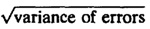 = 88.7
Standard deviation of µ = 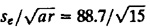 = 22.9
Standard deviation of αj = 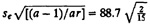 = 32.4
| Previous | Table of Contents | Next |
The F-test, explained in Section 15.1, can now be used to check if SSA is significantly greater than SSE. Assuming that the errors are normally distributed, SSE and SSA have chi-square distributions. The ratio (SSA/vA)/ (SSE/ve), where vA = a - 1 and ve = a(r - 1) are degrees of freedom (DF) for SSA and SSE, respectively, has an F distribution with vA numerator and ve denominator degrees of freedoms. If the computed ratio is greater than the quantile F[1 - α;vA, ve] obtained from the table of quantiles of F-variates (Tables A.6 to A.8 in the Appendix), SSA is considered significantly higher than SSE.
The quantity SSA/vA is called the Mean Square of A (MSA). Similary, SSE/ve is called the Mean Square of Errors (MSE). If the computed ratio MSA/MSE is greater than the value read from the table of quantiles of F-variates (Tables A.6 to A.8 in the Appendix), the factor is assumed to explain a significant fraction of the variation. A convenient tabular arrangement to conduct the F-test is shown in Table 20.3.
| TABLE 20.4 ANOVA Table for the Code Size Comparison Study | ||||||
|---|---|---|---|---|---|---|
| Component | Sum of Squares | Percentage of Variation | Degrees of Freedom | Mean Square | F- Computed | F- Table |
| y | 633,639.00 | |||||
| y.. | 528,281.69 | |||||
| y - y.. | 105,357.31 | 100.0 | 14 | |||
| A | 10,992.13 | 10.4 | 2 | 5496.1 | 0.7 | 2.8 |
| Errors | 94,365.20 | 89.6 | 12 | 7863.8 | ||
| 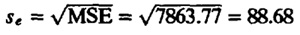 | ||||||
The analysis of one-factor experiments as presented here is based on the same set of assumptions as those discussed earlier in Section 14.7 for regression models and then in Section 18.7 for 2kr experimental designs:
The visual tests to verify these assumptions are also the same as those discussed earlier. A normal quantile-quantile plot of the residuals should be prepared. If plot is approximately linear, normality can be assumed.
A scatter plot of residuals versus predicted response should be prepared and checked to see that there is no trend in the residuals or their spread. If the relative magnitude of errors is smaller than the response by an order of magnitude or more, the trends may be ignored.
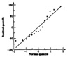
FIGURE 20.1 Plot of the residuals versus predicted response for the code size comparison study.
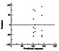
FIGURE 20.2 Normal quantile-quantile plot for the residuals of the code size comparison study.
The estimated values of the model parameters are random variables since they are based on one sample. The estimates obtained from another sample would be different. The variance of the model parameters can be estimated from that of the errors (see Exercise 20.1). These variances are listed in Table 20.5. The confidence intervals for the effects can be computed using t-values read at r(a - 1) degrees of freedom (which are the degrees of freedom associated with errors).
In the table, we have also shown the estimates for linear combination of effects such as µ + αj and for contrasts 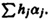. The former can be used to estimate confidence intervals for mean responses since
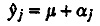
| TABLE 20.5 Parameter Estimation from One-Factor Experiments | ||
|---|---|---|
| Parameter | Estimate | Variance |
| 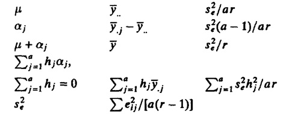 | ||
| Degrees of freedom for errors = a(r - 1) | ||
The contrasts can be used to compare any subset of effects. For example, the confidence interval for α1 - α2 can be used to check if there is a significant difference between alternatives 1 and 2.
Error variance = s2e = = 7863.8
Standard deviation of errors = 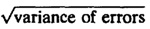 = 88.7
Standard deviation of µ = 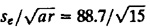 = 22.9
Standard deviation of αj = 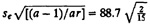 = 32.4
| Previous | Table of Contents | Next |